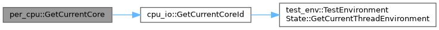
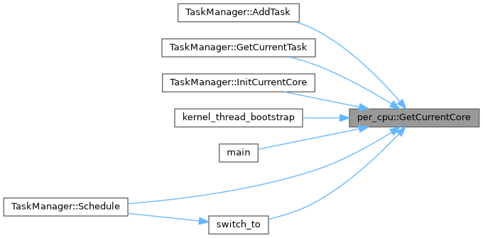

- Generated by
 1.9.8
1.9.8
|
SimpleKernel
|
Classes | |
| struct | PerCpu |
| 每个 CPU 核心的局部数据 More... | |
Typedefs | |
| using | PerCpuArraySingleton = etl::singleton< std::array< PerCpu, SIMPLEKERNEL_MAX_CORE_COUNT > > |
| PerCpu 数组单例类型 | |
Functions | |
| struct per_cpu::PerCpu | __attribute__ ((aligned(SIMPLEKERNEL_PER_CPU_ALIGN_SIZE))) |
| static __always_inline auto | GetCurrentCore () -> PerCpu & |
| 获取当前核心的 PerCpu 数据 | |
Variables | |
| bool | in_timer_handler [SIMPLEKERNEL_MAX_CORE_COUNT] {} |
| TimerHandler 重入保护（per-CPU，防止嵌套 timer 中断导致递归调度） | |
| using per_cpu::PerCpuArraySingleton = typedef etl::singleton<std::array<PerCpu, SIMPLEKERNEL_MAX_CORE_COUNT> > |
PerCpu 数组单例类型
Definition at line 54 of file per_cpu.hpp.
| struct per_cpu::PerCpu per_cpu::__attribute__ | ( | (aligned(SIMPLEKERNEL_PER_CPU_ALIGN_SIZE)) | ) |
|
static |
获取当前核心的 PerCpu 数据
Definition at line 58 of file per_cpu.hpp.


|
inline |